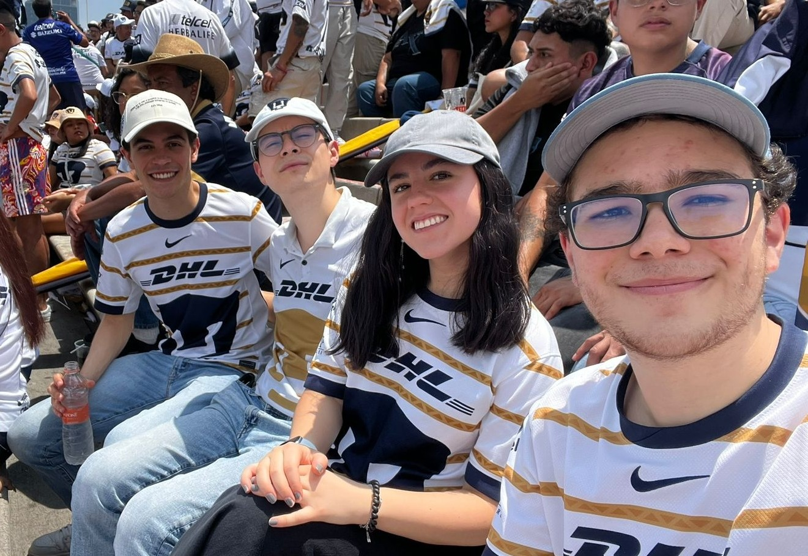

- Supported the Strategy & Planning team for Mexico Mobility, contributing to data-driven decision making.
- Performed market analysis to develop business growth forecasts based on demand trends and user behavior.
- Evaluated competitors and industry dynamics to identify opportunities for market expansion and operational optimization.
Finance + Data Science at ITAM
Miguel Ángel Herrera
I am an 8th-semester double BSc student at ITAM, focused on combining market intuition, analytical rigor, and programming to solve business problems with clarity. This approach is reflected in my role at Uber as an Operations & Logistics Intern in the Strategy & Planning Mobility Mexico team.
About Me
I enjoy working on problems that require both analytical rigor and real-world judgment.
I study Finance and Data Science at ITAM, focusing on understanding how markets evolve, why users behave the way they do, and how better data leads to better decisions.
My academic path has been defined by consistency, curiosity, and high standards, earning top GPA recognition across both programs. An exchange semester at Università Bocconi expanded that perspective in an international environment where finance, analytics, and ambition meet at a demanding pace.
I am currently working at Uber in the Strategy & Planning Mobility Mexico team as an Operations & Logistics Intern, where I contribute to market analysis, demand trends, and growth opportunities through a data-driven approach. At Incode Technologies, through the MAD Fellowship by EPIC Lab ITAM, I worked on market research and the development of an M&A pipeline.
I am particularly interested in investment banking, consulting, and technical work that turns complexity into clear, actionable decisions.
Experience
Experience applying data and analysis to real business decisions.
Education
Academic foundation in Finance, Data Science, and international perspective.
ITAM - Finance
BSc in Finance
- GPA
- 9.4/10
- Dates
- August 2022 - Present
Relevant Coursework:
- Corporate Finance
- Intermediate Accounting
- Macroeconomics
- Microeconomics
Top GPA recognition in 2026, 2025, and 2024.
ITAM - Data Science
BSc in Data Science
- GPA
- 9.4/10
- Dates
- August 2022 - Present
Relevant Coursework:
- Advanced Data Structures
- Artificial Intelligence
- Databases
- Linear Algebra
- Statistics
Top GPA recognition in 2025, 2024, and 2023.
Università Bocconi
Exchange Semester in Finance and Data Science
- GPA
- 28.3/30
- Dates
- August 2025 - January 2026
Relevant Coursework:
- Leadership Skills
- Artificial Intelligence in Strategic Management
- Applied Valuation Analysis for Mergers and Other Business Combinations
- Game Theory and Mechanism Design
Selected among top students for international exchange.
Skills & Tools
Capabilities developed across coursework, internships, and projects.
Programming & Data
- SQL (Advanced)
- Python (Intermediate)
- Java (Intermediate)
- R (Intermediate)
Tools
- Excel (Intermediate)
- Tableau (Basic)
Finance & Analysis
- Valuation
- Market analysis
- Financial modeling
- Data analysis
Languages
- Spanish (Native)
- English (Proficient)
- Italian (Basic)
Projects
Technical work, academic projects, and high-impact extracurricular experiences.
Data Project
GitHub
Chicago Crime Analysis (2001-Present)
Database and data analysis project focused on understanding crime trends in Chicago using a large-scale public dataset.
- Processed and analyzed approximately 8 million records from the Chicago Data Portal.
- Performed data cleaning, normalization up to 4NF, and database design using SQL.
- Built queries to analyze crime trends over time, locations, categories, and district-level patterns.
- SQL
- Data Analysis
- Database Design
- Data Cleaning
- Analytics
Technical Project
GitHub
finportfolio - Portfolio Theory & Asset Pricing Library
Python library for portfolio optimization and asset pricing, designed for learning and practical investment analysis.
- Implemented portfolio optimization models including Markowitz and Tobin.
- Developed CAPM, APT, Gordon Growth Model, Fama-French, and multifactor regression tools.
- Created performance metrics including Sharpe ratio, alpha, VaR, CVaR, and drawdown.
- Python
- Finance
- Portfolio Optimization
- Asset Pricing
- Quantitative Finance
Competition
2nd Place - Finance Knowledge Marathon
National-level finance competition involving top university students across Mexico.
- Organized and led a team of four to maximize performance against 27 teams from leading universities.
- Analyzed an investment project using FCF valuation, multiples, and IRR.
- Evaluated capital structure, debt capacity, and financing strategy.
- Valuation
- Finance
- Team Leadership
- Strategy
- Investment Analysis
Leadership
Undersecretary General - OLINMUN
Leadership role in a Model United Nations conference.
- Coordinated and supervised over 60 students across 15 committees.
- Implemented hybrid participation models and encouraged middle school student participation.
- Designed evaluation systems that ensured timely delivery of all committee work.
- Leadership
- Organization
- Public Speaking
- Strategy
Life Beyond Work
A personal side shaped by strategy, competition, and balance.

Thinking Ahead
-
Chess and strategic games
I enjoy chess and strategic games, which have strengthened my ability to think ahead, evaluate trade-offs, and make decisions under uncertainty. I actively play online, and my profile can be found here.
-
Debate and politics
I stay interested in public life, institutions, and structured disagreement because they sharpen persuasion and judgment.
Performance and Discipline
-
Football
I closely follow football, supporting Pumas UNAM in Mexico and FC Barcelona in Europe.
-
Formula 1
I am particularly interested in performance, race strategy, and the decisions that shape results under pressure.
-
Boxing and soccer
Boxing and soccer help me maintain discipline, consistency, teamwork, and composure.
Creativity and Balance
-
Guitar
I enjoy playing the guitar as a creative outlet.
-
Competitive gaming
I spend time on competitive gaming, mainly FIFA and Call of Duty: Warzone.
-
Family and friends
I highly value spending time with my family and friends, which helps me stay grounded and maintain balance.
Contact
Contact
If you would like to connect, feel free to reach out through any of the channels below.